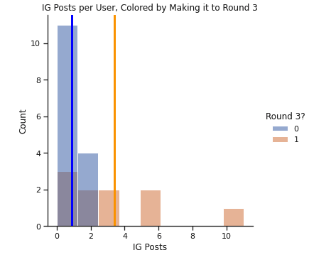

Last Commit: 9/30/2021 13:56:00 - 'added working hyperlinks'
As a rising junior majoring in Computer Science and Music and minoring in Political Economy at the University of California, Berkeley, I have a deep enjoyment for learning, engaging with complex and new ideas, and problem solving in a variety of fields.
I'm very interested in software engineering and design, market analytics - especially within the music industry - and utilizing software and technology to tackle social and industry problems.
I'm pursuing a cross-section between my studies and hoping to find a meaningful role to employ the variety of disciplines and problem solving techniques I've engaged with in my academic life.
Simultaneously, I'm pursuing a personal project in the form of writing, producing, and publishing music while continuing to market and build my personal brand.
I'm interested in following and analyzing the trends in my own data and building engaging software platforms to both grow my brand as a musician as well as better understand market movements and best practices in the music tech industry today.
Featured Projects

Call Me Ace Internship
(Pictured) Distribution of posts with advancing to round 3 as hue & means displayed
Worked as the Product Marketing Intern for Rapper Call Me Ace
Oversaw the marketing rollout of his album release Out of Office
Worked as a campaign analyst during the BET AmpliFind Competition
Goal: create insights from social media data and modeling
Findings: reach is less important than frequency of posting (instagram) in contest success
(Pictured) The statistical significance of LGBTQ+ population vs. Sexuality curriculum assuming normal distribution
Theorized and executed a resarch paper with the Student Association for Applied Statistics
Research Question: How have the Sexual Education policies of the last 20 years affected the prominence of LGBT communities across the United States?
Using a variety of modeling techniques and census and sexual education public data, I worked to assess causes and causality
PCA proved especially helpful, as did trying to create hyperfeatures from the largely binary data (i.e. implemented a safe-sex policy or omitted such a policy)
Findings: the representation of sexuality in the classroom has a statistically significant relationship with LGBT representation in that State